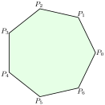
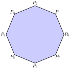
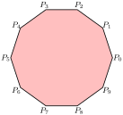

Subsubsection 2.5.3.1 Area of Heptagon
A heptagon is a seven-sided polygon. It has seven edges and seven vertices.
Activity 2.5.4.
\(\textbf{Objective:}\)
Students will learn how to construct a regular heptagon (7-sided polygon) using a compass, ruler, and protractor.
Materials Needed:
-
✅ Compass ✅ Ruler ✅ Protractor ✅ Pencil
✅ Eraser ✅ Graph paper (optional)
Step:1 Draw a Circle.
Step 2: Draw a Horizontal Diameter
Use the ruler to draw a straight line measuring 10cm through the center (O), creating a diameter (A 0 to P1).
Label the first point P1 on the circumference.
Step 3: Divide the Circle into Seven Equal Parts
Step 4: Connect the Points as shown below.

\(\textbf{Extended Activity.}\)
🔹 Try drawing a heptagon using only a compass (without a protractor)
🔹 Shade the inside of the heptagon with different colors to make a pattern.
🔹 Find the sum of the interior angles of the heptagon. (Hint: (n-2) × 180°)
\(textbf{Discussion Questions}\)
1️⃣ What is the sum of all interior angles of a heptagon?
2️⃣ How do we calculate the measure of one interior angle of a regular heptagon?
3️⃣ Can you find a heptagon in real life (architecture, logos, etc.)?
\(\textbf{Properties of a Regular Heptagon.}\text{.}\)
Sum of interior angles = \((n-2) \times 180^\circ\text{.}\) Where n is the number of sides.
Example for a Heptagon (7-sided polygon).
\begin{equation*}
(n-2) \times 180^\circ
\end{equation*}
\begin{equation*}
(7-2) \times 180^\circ = 900^\circ
\end{equation*}
Sum of exterior angles of any \(\textbf{polygon(regular or irregular)}\) is always equl to \(360^\circ\) for both regular and irregular polygons.
3. Each Interior and Exterior Angle (Regular Polygon Only)
\begin{equation*}
\textbf{Each Interior Angle (for a regular polygon):}
\end{equation*}
\begin{equation*}
Interior Angle = \frac{(n-2) \times 180^\circ}{n}
\end{equation*}
\begin{equation*}
\textbf{Each Exterior Angle (for a regular polygon):}
\end{equation*}
\begin{equation*}
Exterior Angle = \frac{360^ \circ}{n}
\end{equation*}
Example for a Regular Heptagon:
\begin{equation*}
\textbf{Each Interior Angle} = \frac{900}{7}
\end{equation*}
\begin{equation*}
= 128.57 \circ
\end{equation*}
\begin{equation*}
\textbf{Each Exterior Angle} = \frac{360}{7}
\end{equation*}
\begin{equation*}
=51.43^ \circ
\end{equation*}
\(\textbf{Study Questions}\)
1️⃣ What is the sum of all interior angles of an octagon ?
2️⃣ How do we calculate the measure of one interior angle of a regular octagon?
3️⃣ Can you find heptagons or hexagons in real life?
Subsubsection 2.5.3.2 Area of a an Octagon
A regular octagon is an(8-sided) polygon with eight vertices (corners) and ten edges (sides).
Activity 2.5.5.
\(\textbf{Materials Needed:}\)
✅ Compass ✅ Ruler ✅ Protractor
✅ Pencil ✅ Eraser ✅ Graph paper (optional)
\(\textbf{ Drawing a Regular Octagon (8-sided Polygon)}\)
1️⃣ Draw a Circle:
🔹Use a compass to draw a circle of your deired radius.
🔹Mark the center (O).
2️⃣ Draw the First Diameter:
🔹Use a ruler to draw a horizontal diameter (P0 to 95) passing through the center.
3️⃣ Divide the Circle into 8 Equal Parts.
🔹Use a protractor to measure angles of 360° ÷ 8 = 45° from point P0.
🔹Mark each 45° interval on the circle to get 8 points.
4️⃣ Connect the Points:
🔹Use a ruler to connect the eight points in order to form the octagon.
\(textbf{Discussion Questions}\)
1️⃣ What is the sum of all interior angles of a heptagon?
2️⃣ How do we calculate the measure of one interior angle of a regular heptagon?
3️⃣ Can you find a heptagon in real life (architecture, logos, etc.)?
\(textbf{Study Questions}\)
1️⃣ What is the sum of all interior angles of an octagon ?
2️⃣ How do we calculate the measure of one interior angle of a regular octagon?
3️⃣ Have you ever seen octagon-shaped objects in real life?

Example 2.5.9.
The figure below represents a regular octagon ABCDEFGH with O as its centre. If OA is 7cm, find its area
Solution.
Area of a triangle \(AOB\)
Subsubsection 2.5.3.3 Area of a Nenagon
A decagon is a nine-sided polygon with nine vertices (corners) and nine edges (sides).
Activity 2.5.6.
\(\textbf{Materials Needed:}\)
✅ Compass ✅ Ruler ✅ Protractor
✅ Pencil ✅ Eraser ✅ Graph paper (optional)
\(\textbf{ Drawing a Regular nenagon (9-sided Polygon)}\)
1️⃣ Draw a Circle:
🔹Use a compass to draw a circle of your desired radius.
🔹Mark the center (O).
2️⃣ Draw the First Diameter:
🔹Use a ruler to draw a horizontal diameter (P0 to P6) passing through the center.
3️⃣ Divide the Circle into 9 Equal Parts.
🔹Use a protractor to measure angles of 360° ÷ 9 = 40° from point P0.
🔹Mark each 40° interval on the circle to get 9 points.
4️⃣ Connect the Points:
\(\textbf{Study Questions}\)
1️⃣ What is the sum of all interior angles of an nenagon ?
2️⃣ How do we calculate the measure of one interior angle of a regular nenagon?
3️⃣ Have you ever seen nenagon-shaped objects in real life?
Example 2.5.10.
One of the angles of a regular polygon is 40° and its sides are 15 cm long. Sketch the polygon and then find the area of the polygon.
Solution 1.
🔹 From the defination of a polygon all interior angle add up to \(360^ \circ\text{.}\)
🔹 To find the number of sides of a triangle we use the formula \(\frac{360}{\text{Interior angle}} = \text{Number of sides}\text{.}\) Where \(n\) is the number opf sides.
\begin{align*}
\frac{360^ \circ}{\text{interior angle}} = \amp \text{Number of sides} \\
\frac{360^\circ}{40} = \amp 9 \text{sides}
\end{align*}
🔹Finding the area of the nenagon we use the formula:
Area of a tringle using sine rule \(\times the number of sides \) Where our ab is the radii..
\begin{align*}
\frac{1}{2}absin 40^\circ \theta = \amp \frac {1}{2} \times 15\text{cm} \times 15\text{cm} \times sin 40^\circ \theta \\
= \amp \frac{1}{2} \times 225 \times 0.6428 \text{cm}^2
\end{align*}
🔹 There are 9 triangles since a nenagon has 9 sides.
🔹Therefore, total area is:
\begin{align*}
= \amp 9 \times (\frac{1}{2} \times 225 \times 0.6428 ) \\
= \amp 9 \times 225 \times 0.3214 \\
= \amp 73.6006 \text{cm}^2
\end{align*}
Subsubsection 2.5.3.4 Area of a Decagon
A decagon is a ten-sided polygon with ten vertices (corners) and ten edges (sides).
Activity 2.5.7.
✅ Compass ✅ Ruler ✅ Protractor
✅ Pencil ✅ Eraser ✅ Graph paper (optional)
\(\textbf{ Drawing a Regular Decagon (10-sided Polygon)}\)
1️⃣ Draw a Circle:
🔹Use a compass to draw a circle of your desired radius.
🔹Mark the center (O).
2️⃣ Draw the First Diameter:
🔹Use a ruler to draw a horizontal diameter (P0 to P6) passing through the center.
3️⃣ Divide the Circle into 10 Equal Parts.
🔹Use a protractor to measure angles of 360° ÷ 10 = 36° from point A.
🔹Mark each 36° interval on the circle to get 10 points.
4️⃣ Connect the Points:
🔹Use a ruler to connect the ten points in order to form the decagon.
\(\textbf{Study Questions}\)
1️⃣ What is the sum of all interior angles of an decagon ?
2️⃣ How do we calculate the measure of one interior angle of a regular decagon?
3️⃣ Can you find decagons in real life?
4️⃣ What is the sum of all interior angles of a heptagon?
